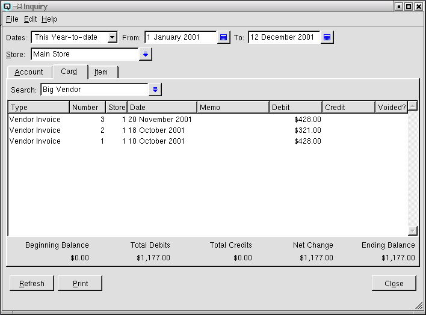

Inquiry
The inquiry window provides almost instant access to information
such as all transactions by account, all purchases by customer, or all
transactions involving a specific item.

Date Range
Select a date range to view.
From
Displays the start of the date range to view.
To
Displays the end of the date range to view.
Store
Select the store to view. If left blank all stores will be displayed.
Inquiry Folders
-
- Account - Displays all transactions affecting a specific
account for the specified dates.
- Card - Displays all transactions affecting a specific card
for the specified dates.
- Item - Displays all transactions affecting a specific
item for the specified dates.
Transaction Table
-
- Type - Displays the type of transaction.
- Number - Displays the number of the transaction.
- Store - The store in which the transaction was created.
- Date - Displays the date the transaction is posted to. By
default the dates are sorted in descending order. This may be changed
to sort in ascending order by using your mouse to double click on the
date attribute.
- Memo - Displays the transaction memo.
- Debit - The amount of a debit to an account, card or item.
- Credit - The amount of a credit to an account, card or
item.
- Voided? - Quasar Accounting displays a checkmark when the
transaction is voided.
Beginning Balance
The beginning balance on the start date.
Total Debits
Total amount of the debits between the from and to dates.
Total Credits
Total amount of the credits between the from and to dates.
Net Change
The total debits minus the total credits, between the from and to
dates.
Ending Balance
The opening balance plus the total debits and minus the total
credits between the from and to dates.
Refresh
Clicking on refresh will refresh the data on the screen.
Print
Select this function to print the inquiry screen to the printer.